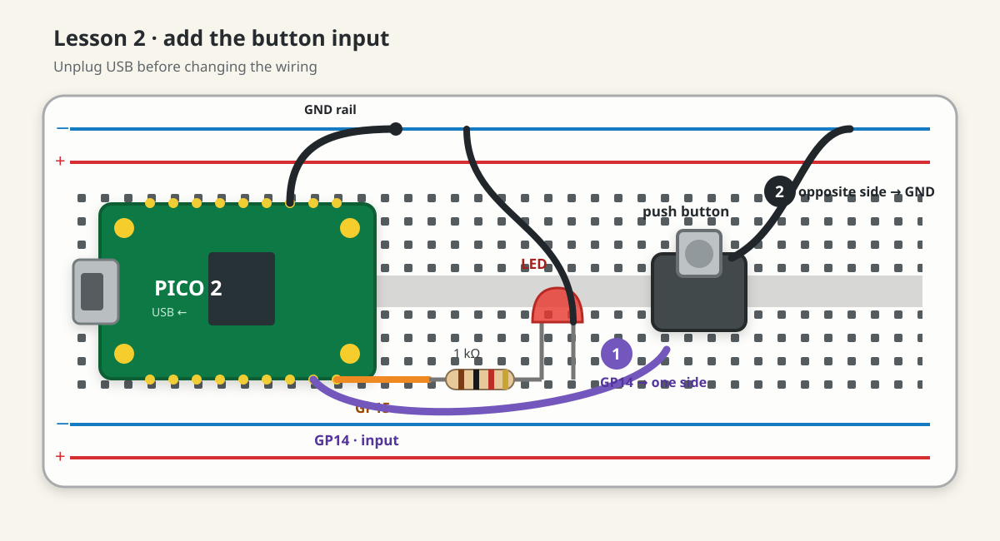

Dub Siren V3 · lesson 0002
Press to make light
Turn the blinking output from Lesson 1 into an input–output instrument: hold the button, LED on; release it, LED off.
1. Keep Lesson 1 assembled
- KeepRed LED on GP15
- Keep1 kΩ LED resistor
- AddOne 12 × 12 mm tactile button
- AddTwo male-to-male jumpers
The tactile button and jumpers are supplied by your starter pack. The final panel button works on the same principle, but we save it for the panel build.
2. See the two hidden sides
A four-leg tactile button is electrically a two-terminal switch. Two legs form one permanently connected side; the other two form the other side. Pressing joins both sides.
3. Add the input
Unplug USB. Keep the complete GP15 → resistor → LED → GND circuit unchanged.
- Place the tactile button across the breadboard’s centre trench.
- Connect one button side to Pico
GP14. - Connect the opposite button side to
GND. - Trace it aloud: “GP14, button, ground.”

Why does the button need no external resistor?
Button(14) defaults to an internal pull-up. Inside the Pico, a weak resistor normally holds GP14 high. Pressing the button connects GP14 to ground. picozero translates that low voltage into is_pressed = True.
4. Connect input to output
Reconnect USB. Run the prepared main.py:
from picozero import Button, LED
led = LED(15)
button = Button(14)
button.when_pressed = led.on
button.when_released = led.offThe last two lines do not call the functions immediately. They hand picozero the actions to call later, when the button changes state. That is why there are no parentheses after led.on or led.off.
5. Test the physical rule
What should the LED do while untouched, while held, and immediately after release? Say it aloud, then test.
- Leave button untouched: LED stays off.
- Hold button for three seconds: LED stays on for three seconds.
- Release: LED turns off immediately.
- Repeat ten times. Each press should produce one clean response.
If it behaves incorrectly
- Always on: unplug USB; the two button wires may use the same internally connected side.
- Never on: verify GP14, GND, and that the LED still works with the Lesson 1 blink code.
- Works only when button is twisted: reseat it; a leg may not be inside a breadboard contact.
- Several responses per press: mechanical contacts bounce.
Buttonapplies a short debounce time by default; we investigate only if it remains visible.
Make it yours
After the basic test works, change one line:
button.when_pressed = led.pulsePredict what release will do before trying it. If the LED keeps pulsing, restore led.on for now. Lesson 3 will compare momentary and latched behaviour deliberately.
Done means
- The LED is on only while the button is held.
- You can identify the button’s two connected sides.
- You can explain why the input uses no external resistor.
- You know why callback names have no parentheses.
Tell your teaching agent: “The button works,” or describe exactly what the LED does when untouched, pressed, and released. Ask questions whenever the breadboard diagram and the real component seem different.